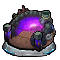

Beginner Quick Start
Purpose
Wanted to write a very simple start to playing for a new beginner or new
account.
Summarizing and leaving out details; for full details see
GW/wiki/discord links.
Gamewith (GW) link:
https://xn--eckwa2aa3a9c8j8bve9d.gamewith.jp/
Discord invite link:
https://discord.gg/QWvbWAj
Wiki link
https://monster-strike-enjp.fandom.com/wiki/Monster_Strike_Wiki
First things to learn
- Play welcome quests
- A bounce unit (orange arrow) will bounce OFF enemies.
- A pierce unit (blue arrow) will pierce THROUGH enemies.
- Strikeshot (SS) is a special attack. You can use SS when you see "OK" on top-left of portrait then tap portrait to use.
- Do your re-rolls aiming for at least one lucy, anastasia, or masamune.
-
Do your normal quests, BUT SAVE YOUR 1STAMINA BONUS quests.

- Do your step up missions Link to Discord General Chat, go to pinned messages, see the image from ScottNak August 8, 2024.
- Youtube: Youtube beginner essentials 1
ML sanc dragon. online coop
- After your normal quests are done, you should have sanc dragon.
- Evolve sanc dragon to his highest form (Monster ID 7358)
- Max lucks (ML) get two reward chests. Fuse 99 copies of 6* monster together to create ML.
- Use ML sanc dragon in slot1 and play some quests/quick multi online coop.
- Youtube: Youtube beginner essentials ML sanc dragon. online coop
Next things to do?
- Game is free flowing and fluid after normals.
- Focus on clearing monthlies every month, these are best rewards in the game.
- do tower first (low difficulty) for 68 orbs
- then abyss (higher difficulty) for 55 orbs
- also try uncharted dunes for 10 orbs
- and tournament for 30orbs.
- skip tenma, its end game content (released 2021-2023) and very strict on box and strategy.
-
skip mausoleum, its end game content (released 2025) and very strict
on box and strategy.

- the following are not monthlies, but are high priority to do:
- clear collab quests/missions
- starting to level up gouzetsu bonuses (high difficulty) GW gouzetsu bonuses
- ML dokesokotori (high difficulty). must check schedule and wait for quest to arrive. GW dokesokotori strategy guide
- some other things a new account can do:
- purchase berry bank slot for 5orbs. GW berry bank
- farm 5 ML to unlock certain events
- go to library, clear 3 bakuzetsus to unlock gouzetsus quests. the older ones are easier.
- go to library, clear 1 gouzetsu to unlock events such as abyss and maus.
- learn about battle ticket system and chernobog. You pay ORBS to play, make sure you understand system so you do not waste orbs. GW battle tickets GW Chernobog
- Chernobog ticket sales end April 20, 2026. If you are reading this earlier than March 1, 2026 you have a chance to buy tickets daily and have enough tickets to max luck. If 100% win rate you only need 25 tickets, but unlikely for new players to get 100% win rate.
- Ciriatto (high difficulty) is an insidous available until January 28, 2026. If you have the units/skill, clear once to get max luck. GW Ciriatto
- Complete treasure 9 for misc rewards by running the latest bakuzetsu quest. As of now, Shooting is latest treasure 9 running from December 26, 2025 to February 24, 2026 GW Treasure 9
- Youtube: beginner essentials - monthlies (tower, abyss, dunes, tournament)
Misc
Misc - gimmicks
- Below are some gimmicks, see full list at Help Page - Gimmicks and Stage Effects
- The higher the difficulty, the more you need to understand gimmicks and pick the right team.
- gravity barrier. slows you down.
-
 damage wall. damages you if touched.
damage wall. damages you if touched.
- warp. warps you if touched, hindering movement.
- mines. explodes and inflicts damage if touched.
- magic circle. transform you into (WEAK) chicken state if touched.
- wind. displaces units either inwards or away from wind source. in some stages this wind spreads infectious virus.
- speed down wall. basically stops you (heavy slow down) if touched.
-
 transport wall. transports (warps) you if touched
transport wall. transports (warps) you if touched
-
 slowdown floor. Greatly slows down a unit when touched.
slowdown floor. Greatly slows down a unit when touched.
Misc - more UI questions
- For a full translated UI picture, go to Discord bot playground channel, then type ".quest-nav"
-
 Event Quests. All newer quests here, including collab quests.
Scheduled into time slots, so NOT available 24/7
Event Quests. All newer quests here, including collab quests.
Scheduled into time slots, so NOT available 24/7
-
 Library Quests. Older quests here and available 24/7, but they cost
library (book icon) points.
Library Quests. Older quests here and available 24/7, but they cost
library (book icon) points.
- Guardian Beast Forest. pet with special effect. This is a MUST have, but you can skip it until you're intermediate.
- Temple/Berries. Berries provide bonuses to your team, this is MUST have for clearing high difficulty, but also VERY HIGH time investment. I would skip if you are still only playing low difficulty.
- Evo Materials (turtles, morlings, coins, etc..). Mats to evolve and max out stats. Skip this... until you run out of materials.
- Playgrounds. Easy orbs, and 0 stamina to play. The strategy is more focused on puzzles and being tricky. Released as sets of five, the first 1-3 in each set is easy. 4-5 can be very tricky and need to look up a guide. Can play this if you have spare time.
- Sacred Gounds/Sanctuary of Beasts. High difficulty, low rewards. Skip it.
- Uncharted Lands (UL). High difficulty, horrible rewards. Skip it.
- Historical - VERY high difficulty, horrible rewards. Skip it.
-  Deep Abyss/Shinen - high difficulty, okay reward . Skip it until you are intermediate/advanced.
- Scramble Universe - "mario kart", online time attack sort of mode, okay rewards and some cosmetics. You can clear each quest once for 2orbs each. I personally skip this, but you can decide if rewards/cosmetics are worth it to you.
Misc
-
GW beginners article
- GW beginners article
- Go to Discord #ms-guide channel then can click google doc for: intro guide, co-op guide, gimmicks/abilities.
- I would consider yourself past beginner when you have some of the following: clearing 9-15* difficulty quests, played for a few months, farming max lucks, rolled 20+ good 5-6* gacha units, understand the game/UI more.